Tracking Changes in Cooperation and Conflict: Comparing Networks
Cassy Dorff and Shahryar Minhas
2025-06-26
Source:vignettes/tracking_changes.Rmd
tracking_changes.RmdVignette Summary
This vignette demonstrates how to use netify’s
compare_networks() function to analyze changes in
international relations over time using data from the Integrated Crisis
Early Warning System (ICEWS). We’ll explore some fun questions about how
countries interact:
- Talk vs. Action: Do countries that cooperate verbally (diplomatic statements) also cooperate materially (aid, trade)?
- Friend or Foe: Are cooperation and conflict separate networks, or do countries that cooperate also tend to have conflicts?
- Temporal Stability: Which international relationships persist over time and which are fleeting?
- Structural Evolution: How do the overall patterns of international interactions change across years?
We’ll use compare_networks() to answer these
questions:
- Compares networks across multiple dimensions - edges, structure, nodes, and attributes. Think of it as running a comprehensive diagnostic between any two (or more) networks to understand what’s similar, what’s different, and why it matters.
- Function notes:
- Multi-method flexibility: Choose from correlation, Jaccard, Hamming, QAP, spectral distance, or “all”
- Four comparison modes: Compare edges (who connects to whom), structure (density, clustering), nodes (actor composition), or attributes (actor characteristics)
- Statistical rigor: Built-in permutation tests for significance
- Output: Returns information on edge changes, similarity metrics, and structural differences
Understanding ICEWS Data
The Integrated Crisis Early Warning System (ICEWS) provides event-level data on interactions between international actors. Each event captures:
- Who: Source and target countries
- What: Type of interaction (cooperation or conflict, verbal or material)
- When: Date of the event
- How Much: Intensity scores on cooperation/conflict scales
## i j year id verbCoop matlCoop verbConf
## 2 Afghanistan Albania 2002 AFGHANISTAN_ALBANIA_2002 6 1 0
## 3 Afghanistan Albania 2003 AFGHANISTAN_ALBANIA_2003 1 1 0
## 4 Afghanistan Albania 2004 AFGHANISTAN_ALBANIA_2004 10 2 0
## 5 Afghanistan Albania 2005 AFGHANISTAN_ALBANIA_2005 0 0 0
## 6 Afghanistan Albania 2006 AFGHANISTAN_ALBANIA_2006 6 2 3
## 7 Afghanistan Albania 2007 AFGHANISTAN_ALBANIA_2007 3 2 0
## matlConf i_year j_year i_polity2 j_polity2 i_iso3c j_iso3c
## 2 0 AFGHANISTAN_2002 ALBANIA_2002 NA 7 AFG ALB
## 3 0 AFGHANISTAN_2003 ALBANIA_2003 NA 7 AFG ALB
## 4 1 AFGHANISTAN_2004 ALBANIA_2004 NA 7 AFG ALB
## 5 0 AFGHANISTAN_2005 ALBANIA_2005 NA 9 AFG ALB
## 6 21 AFGHANISTAN_2006 ALBANIA_2006 NA 9 AFG ALB
## 7 0 AFGHANISTAN_2007 ALBANIA_2007 NA 9 AFG ALB
## i_region j_region i_gdp j_gdp i_log_gdp j_log_gdp
## 2 South Asia Europe & Central Asia 7555185296 6857137321 22.74550 22.64856
## 3 South Asia Europe & Central Asia 8222480251 7236243584 22.83014 22.70237
## 4 South Asia Europe & Central Asia 8338755823 7635298387 22.84418 22.75605
## 5 South Asia Europe & Central Asia 9275174321 8057257368 22.95061 22.80984
## 6 South Asia Europe & Central Asia 9772082812 8532849798 23.00280 22.86719
## 7 South Asia Europe & Central Asia 11123202208 9043392346 23.13230 22.92530
## i_pop j_pop i_log_pop j_log_pop
## 2 21000256 3051010 16.86005 14.93098
## 3 22645130 3039616 16.93546 14.92724
## 4 23553551 3026939 16.97479 14.92306
## 5 24411191 3011487 17.01055 14.91794
## 6 25442944 2992547 17.05195 14.91164
## 7 25903301 2970017 17.06988 14.90408The quad variables in ICEWS:
-
verbCoop: Verbal cooperation (diplomatic statements, promises) -
matlCoop: Material cooperation (aid, trade agreements) -
verbConf: Verbal conflict (threats, accusations) -
matlConf: Material conflict (sanctions, military actions)
Creating Networks for Comparison
First, let’s create separate networks for different types of interactions in a single year:
# Create networks for different interaction types in 2002
icews_2002 <- icews[icews$year == 2002, ]
# Verbal cooperation network
verb_coop_2002 <- netify(
icews_2002,
actor1 = 'i', actor2 = 'j',
weight = 'verbCoop',
symmetric = FALSE
)
# Material cooperation network
matl_coop_2002 <- netify(
icews_2002,
actor1 = 'i', actor2 = 'j',
weight = 'matlCoop',
symmetric = FALSE
)
# Verbal conflict network
verb_conf_2002 <- netify(
icews_2002,
actor1 = 'i', actor2 = 'j',
weight = 'verbConf',
symmetric = FALSE
)
# Material conflict network
matl_conf_2002 <- netify(
icews_2002,
actor1 = 'i', actor2 = 'j',
weight = 'matlConf',
symmetric = FALSE
)1. Comparing Cooperation Networks: Verbal vs. Material
Do countries that cooperate verbally also cooperate materially? Let’s
use compare_networks() with method = "all" to
get a comprehensive comparison:
# Compare verbal vs material cooperation
coop_comparison <- compare_networks(
list(
verbal = verb_coop_2002,
material = matl_coop_2002
),
method = "all"
)
# Display comparison results
coop_comparison## Network Comparison Results
## ==========================
## Type: cross_network
## Method: all
## Networks compared: 2
##
## Summary Statistics:
## comparison correlation jaccard hamming qap_correlation qap_pvalue
## verbal vs material 0.5071868 0.1903896 0.3084747 0.5071868 0
## spectral
## 90096.66
##
## Edge Changes:
## verbal_vs_material: 111 added, 7016 removed, 1676 maintained
# Interpret results
cat("\n=== INTERPRETATION ===\n")##
## === INTERPRETATION ===
if(coop_comparison$summary$correlation > 0.7) {
cat("Strong alignment: Countries that cooperate verbally tend to cooperate materially\n")
} else if(coop_comparison$summary$correlation > 0.4) {
cat("Moderate alignment: Verbal and material cooperation partially overlap\n")
} else {
cat("Weak alignment: Verbal promises don't strongly translate to material actions\n")
}## Moderate alignment: Verbal and material cooperation partially overlapUnderstanding the Output
Let’s break down what each metric tells us:
Network Comparison Results Header:
-
Type: cross_network- Indicates we’re comparing separate networks (not time periods) -
Method: all- We requested all comparison metrics -
Networks compared: 2- Confirms we’re comparing two networks
Summary Statistics Table:
- correlation (0.507): Measures how similar the edge weights are between networks. A value of 0.507 indicates moderate positive correlation - when verbal cooperation is high between two countries, material cooperation tends to be somewhat higher too, but the relationship isn’t perfect.
- jaccard (0.190): Only 19% of possible edges exist in BOTH networks. This low value tells us that most country pairs engage in either verbal OR material cooperation, but not both.
- hamming (0.308): About 31% of all possible edges differ between the two networks. This measures the proportion of country pairs that have different connection patterns.
- qap_correlation (0.507) with qap_pvalue (0): The QAP test confirms the correlation is statistically significant (p < 0.001). This isn’t due to random chance.
Edge Changes:
-
111 added: 111 country pairs have material cooperation but NO verbal cooperation -
7016 removed: 7,016 country pairs have verbal cooperation but NO material cooperation -
1676 maintained: 1,676 country pairs have BOTH verbal and material cooperation
This tells us verbal cooperation is much more common than material cooperation, and most verbal promises don’t translate into material actions.
Visualizing Domain Differences
# Extract edge change information
edge_changes <- coop_comparison$edge_changes[[1]]
# Create summary of changes
change_summary <- data.frame(
Type = c("Verbal Only", "Material Only", "Both"),
Count = c(
edge_changes$removed, # In verbal but not material
edge_changes$added, # In material but not verbal
edge_changes$maintained # In both
)
)
# Visualize
ggplot(change_summary, aes(x = Type, y = Count)) +
geom_col(fill = "gray30") +
labs(title = "Verbal vs Material Cooperation Networks",
subtitle = "Which relationships exist in each domain?",
y = "Number of Dyadic Relationships") +
theme_minimal()The visualization makes the pattern clear: verbal cooperation (cheap talk) is far more common than material cooperation (costly actions).
2. Cooperation vs. Conflict: Testing Network Relationships
Are cooperation and conflict networks related? Let’s use the QAP (Quadratic Assignment Procedure) method for statistical testing:
# Perform QAP test between cooperation and conflict
coop_conf_qap <- compare_networks(
list(
cooperation = verb_coop_2002,
conflict = verb_conf_2002
),
method = "qap",
n_permutations = 500 # Reduced for vignette speed
)
# Construct message
qap_msg <- paste0(
"**QAP Test Results:**\n\n",
"- Observed correlation: ", round(coop_conf_qap$summary$qap_correlation, 3), "\n",
"- P-value: ", round(coop_conf_qap$summary$qap_pvalue, 3), "\n"
)
# Add interpretation based on significance
if (coop_conf_qap$summary$qap_pvalue < 0.05) {
if (coop_conf_qap$summary$qap_correlation > 0) {
qap_msg <- paste0(
qap_msg,
"→ Cooperation and conflict networks are positively correlated\n",
" (Countries interact through both cooperation AND conflict)\n"
)
} else {
qap_msg <- paste0(
qap_msg,
"→ Cooperation and conflict networks are negatively correlated\n",
" (Different countries engage in cooperation vs conflict)\n"
)
}
} else {
qap_msg <- paste0(
qap_msg,
"→ No significant relationship between cooperation and conflict patterns\n"
)
}
# Print result
cat(qap_msg)## **QAP Test Results:**
##
## - Observed correlation: 0.506
## - P-value: 0
## → Cooperation and conflict networks are positively correlated
## (Countries interact through both cooperation AND conflict)Understanding QAP Results
The positive correlation (0.506) with p-value of 0 tells us that countries that cooperate also tend to have conflicts. This counterintuitive finding suggests that international interaction is multifaceted - countries that engage diplomatically experience both positive and negative interactions, while countries that don’t interact have neither cooperation nor conflict.
3. Temporal Evolution: Tracking Network Changes
How do international networks evolve over time? When you pass a
longitudinal netify object to compare_networks(), it
automatically compares consecutive time periods:
# Create networks for multiple years
years_to_compare <- seq(2002, 2014, by=4)
# Create cooperation networks for each year
coop_net_longit <- netify(
icews[icews$year %in% years_to_compare, ],
actor1 = 'i', actor2 = 'j',
time = 'year',
weight = 'verbCoop',
symmetric = FALSE,
output_format = 'longit_list'
)
# Compare across time - automatic pairwise comparisons
temporal_comparison <- compare_networks(
coop_net_longit,
method = "all"
)
# Display temporal comparison results
temporal_comparison## Network Comparison Results
## ==========================
## Type: temporal
## Method: all
## Networks compared: 4
##
## Summary Statistics:
## metric mean sd min max
## correlation 8.281725e-01 3.408303e-02 0.7714331 8.737513e-01
## jaccard 5.808310e-01 1.382375e-02 0.5605510 5.942327e-01
## hamming 2.173000e-01 9.274865e-03 0.2000952 2.250693e-01
## spectral 1.324023e+04 3.756815e+03 8847.5694759 1.765847e+04
##
## Edge Changes:
## 2002_vs_2006: 2680 added, 1943 removed, 6749 maintained
## 2002_vs_2010: 3214 added, 1930 removed, 6762 maintained
## 2002_vs_2014: 3141 added, 2059 removed, 6633 maintained
## 2006_vs_2010: 2743 added, 2196 removed, 7233 maintained
## 2006_vs_2014: 2711 added, 2366 removed, 7063 maintained
## 2010_vs_2014: 2469 added, 2671 removed, 7305 maintainedUnderstanding Temporal Comparison Output
Header Changes:
-
Type: temporal- Indicates we’re comparing time periods from the same longitudinal network -
Networks compared: 4- We have 4 time periods (2002, 2006, 2010, 2014)
Summary Statistics Table:
Instead of a single comparison, we now see summary statistics across ALL pairwise comparisons:
- mean correlation (0.828): On average, networks are highly correlated across time
- sd (0.034): Very low standard deviation indicates consistent similarity
- min (0.771) to max (0.874): Even the least similar pair of years has correlation > 0.77
This high correlation tells us that cooperation networks are quite stable over time - the same countries tend to cooperate across years.
Edge Changes Section:
Shows all pairwise comparisons (not just consecutive years):
-
2002_vs_2006: First comparison -
2010_vs_2014: Last consecutive comparison - Notice that as time gaps increase, more edges are added/removed
Visualizing Temporal Changes
# Extract edge changes over time
edge_change_data <- data.frame(
Comparison = names(temporal_comparison$edge_changes),
Added = sapply(temporal_comparison$edge_changes, function(x) x$added),
Removed = sapply(temporal_comparison$edge_changes, function(x) x$removed),
Maintained = sapply(temporal_comparison$edge_changes, function(x) x$maintained)
)
# Reshape for plotting
edge_change_long <- edge_change_data %>%
pivot_longer(cols = c(Added, Removed, Maintained),
names_to = "Change_Type",
values_to = "Count")
# Plot edge changes
ggplot(edge_change_long, aes(x = Comparison, y = Count, fill = Change_Type)) +
geom_col(position = "dodge") +
scale_fill_manual(
values = c(
"Added" = "#A8D5BA",
"Removed" = "#E8B4B8",
"Maintained" = "#95A99C")) +
labs(
title = "Edge Changes Between Years",
subtitle = "Tracking relationship dynamics over time",
x = "Year Comparison",
y = "Number of Edges") +
theme_minimal() +
theme(
axis.text.x = element_text(
angle = 45, hjust = 1)
)
Notice that “Maintained” edges dominate - most relationships persist across time periods, confirming the stability we observed in the correlation metrics.
4. Structural Evolution: Beyond Individual Edges
The what = "structure" option compares network-level
properties rather than individual edges:
# Compare structural properties across years
struct_comparison <- compare_networks(
coop_net_longit,
what = "structure"
)
# Display structural comparison
knitr::kable(struct_comparison$summary,
caption = "Structural Properties Across Time Periods",
digits = 3,
align = "c")| network | n_nodes | n_edges | density | reciprocity | transitivity | mean_degree |
|---|---|---|---|---|---|---|
| 2002 | 152 | 8692 | 0.376 | 0.978 | 0.606 | 57.184 |
| 2006 | 152 | 9429 | 0.408 | 0.977 | 0.628 | 62.033 |
| 2010 | 152 | 9976 | 0.432 | 0.982 | 0.639 | 65.632 |
| 2014 | 152 | 9774 | 0.423 | 0.973 | 0.630 | 64.303 |
Understanding Structural Comparison Output
This table shows how network-wide properties evolve:
- n_nodes (152): Number of countries remains constant - same actors throughout
- n_edges: Increases from 8,692 (2002) to 9,774 (2014) - more connections over time
- density: Increases from 0.376 to 0.423 - the network becomes denser
- reciprocity: Stays very high (0.97-0.98) - if country A cooperates with B, B almost always cooperates with A
- transitivity: Around 0.61-0.64 - moderate clustering (friend of a friend is often a friend)
- mean_degree: Increases from 57.2 to 64.3 - average country has more partners over time
The increasing density and mean degree suggest growing interconnectedness in international cooperation.
Visualizing Structural Changes
# Prepare data for visualization
# struct_comparison$summary contains a
# data.frame with structural metrics over time
struct_data <- struct_comparison$summary
# Calculate percent changes from baseline
baseline_year <- struct_data$network[1]
struct_long <- struct_data %>%
select(-n_nodes) %>% # Remove n_nodes since it doesn't change much
pivot_longer(cols = -network, names_to = "metric", values_to = "value") %>%
group_by(metric) %>%
mutate(
first_value = value[1],
percent_change = (value - first_value) / first_value * 100
) %>%
ungroup()
# Create heatmap of changes
ggplot(
filter(struct_long, network != baseline_year),
aes(x = network, y = metric, fill = percent_change)) +
geom_tile(color = "white") +
geom_text(aes(label = round(percent_change, 1)), color = "black", size = 4) +
scale_fill_gradient2(
low = "#d73027", mid = "white", high = "#1a9850",
midpoint = 0, name = "% Change") +
labs(
title = "Structural Changes Heatmap",
subtitle = paste("Percent change from", baseline_year),
x = "", y = "") +
theme_minimal() +
theme(axis.text.x = element_text(angle = 0))The heatmap reveals that density, number of edges, and mean degree all increase by about 14-15% from 2002 to 2010, while reciprocity slightly decreases and transitivity shows modest growth.
Many ways to visualize structural changes … could also just do a line plot:
# Reshape data for visualization
struct_long <- struct_data %>%
select(-n_nodes) %>% # Remove n_nodes since it doesn't change
pivot_longer(cols = -network, names_to = "metric", values_to = "value") %>%
group_by(metric) %>%
mutate(
# Calculate percent change from first year
first_value = value[1],
percent_change = (value - first_value) / first_value * 100,
# Also calculate year-to-year change
yoy_change = (value - lag(value)) / lag(value) * 100
) %>%
ungroup()
# Visualize structural changes over time
ggplot(struct_long, aes(x = network, y = value, group = metric)) +
geom_line(size = 1.2) +
geom_point(size = 3) +
facet_wrap(~ metric, scales = "free_y", ncol = 2) +
labs(
title = "Structural Properties Over Time",
subtitle = "Evolution of network characteristics",
x = "", y = "") +
theme_minimal() +
theme(legend.position = "none")
5. Node Composition: Tracking Actor Dynamics
The what = "nodes" option tracks which actors enter and
exit the network:
# Compare node composition
node_comparison <- compare_networks(
coop_net_longit,
what = "nodes"
)
# Display node comparison
knitr::kable(node_comparison$summary,
caption = "Node Composition Across Time Periods",
digits = 0,
align = "c")| network | n_nodes | mean_overlap | mean_jaccard | |
|---|---|---|---|---|
| 2002 | 2002 | 152 | 152 | 1 |
| 2006 | 2006 | 152 | 152 | 1 |
| 2010 | 2010 | 152 | 152 | 1 |
| 2014 | 2014 | 152 | 152 | 1 |
The table shows:
- All networks have 152 nodes (countries)
-
mean_overlap = 152: All 152 countries appear in all comparisons
This is by design in our example since we filtered the data to only include certain countries. In real-world datasets, you might see actors entering or exiting the network over time.
6. Deep Dive: Using return_details for Comprehensive Analysis
The return_details = TRUE option provides access to full
comparison matrices:
# Compare 2002 and 2014 cooperation networks with full details
early_late_comp <- compare_networks(
# note subset here is
# subset.netify() function
subset(
coop_net_longit,
time=c("2002", "2014")
),
method = "all",
return_details = TRUE
)
# Access detailed comparison matrices
names(early_late_comp$details)## [1] "correlation_matrix" "jaccard_matrix" "hamming_matrix"
## [4] "spectral_matrix"
# Get edge changes
changes <- early_late_comp$edge_changes[[1]]
# Summary of relationship dynamics
changes_summary <- paste0(
"**Relationship Dynamics 2002-2014:**\n\n",
"- Stable relationships: ", changes$maintained, "\n",
"- New relationships: ", changes$added, "\n",
"- Ended relationships: ", changes$removed, "\n",
"- Total change rate: ",
round((changes$added + changes$removed) /
(changes$maintained + changes$added + changes$removed) * 100, 1), "%\n"
)
if(!is.na(changes$weight_correlation)) {
changes_summary <- paste0(changes_summary,
"- Weight correlation for maintained edges: ",
round(changes$weight_correlation, 3), "\n"
)
if(changes$weight_correlation > 0.7) {
changes_summary <- paste0(changes_summary,
" → Stable cooperation intensities for continuing relationships\n")
} else {
changes_summary <- paste0(changes_summary,
" → Cooperation intensities vary even for maintained relationships\n")
}
}Relationship Dynamics 2002-2014:
- Stable relationships: 6633
- New relationships: 3141
- Ended relationships: 2059
- Total change rate: 43.9%
- Weight correlation for maintained edges: 0.762 → Stable cooperation intensities for continuing relationships
Understanding Detailed Output
With return_details = TRUE, you get:
- Access to full similarity matrices (correlation_matrix, jaccard_matrix, hamming_matrix)
- These allow custom analysis and visualization of network similarities
The relationship dynamics show: - 6,633 stable relationships persist from 2002 to 2014 - 3,141 new relationships formed - 2,059 relationships ended - 43.9% total change rate indicates moderate network evolution - Weight correlation of 0.762 means cooperation intensity is fairly stable for continuing relationships
With this detailed information you could create custom visualizations or further statistical tests, such as detecting structural breaks in time series.
7. Spectral Distance: Comparing Network Structure Through Eigenvalues
The spectral distance approach provides a way to compare networks based on their fundamental structural properties captured by eigenvalues (See Shimada et al 2016 for a useful introduction):
# Compare networks using spectral distance
spectral_comp <- compare_networks(
list(
"2002" = coop_net_longit[["2002"]],
"2014" = coop_net_longit[["2014"]]
),
method = "spectral"
)
# Display spectral comparison results
spectral_comp## Network Comparison Results
## ==========================
## Type: cross_network
## Method: spectral
## Networks compared: 2
##
## Summary Statistics:
## comparison spectral
## 2002 vs 2014 15167.86
##
## Edge Changes:
## 2002_vs_2014: 3141 added, 2059 removed, 6633 maintained
# Interpretation
# Build spectral interpretation message
spec_dist <- spectral_comp$summary$spectral
spec_msg <- paste0(
"=== SPECTRAL DISTANCE INTERPRETATION ===\n\n",
"- Spectral distance: ", round(spec_dist, 2), "\n"
)
# Add interpretation
interpretation <- if (spec_dist < 10) {
"Low spectral distance: Networks have very similar structural properties\n"
} else if (spec_dist < 50) {
"Moderate spectral distance: Networks show some structural differences\n"
} else {
"High spectral distance: Networks have substantially different structures\n"
}
# Combine and print
cat(paste0(spec_msg, "→ ", interpretation))## === SPECTRAL DISTANCE INTERPRETATION ===
##
## - Spectral distance: 15167.86
## → High spectral distance: Networks have substantially different structuresUnderstanding Spectral Distance
Spectral distance measures how different two networks are by comparing their eigenvalue spectra. It captures global structural properties that other metrics might miss:
- What it measures: The distance between the sorted eigenvalues of two network Laplacian matrices
- Scale: Ranges from 0 (identical spectra) to potentially large values
-
Advantages:
- Captures global network structure
- Sensitive to community structure and clustering patterns
- Robust to node relabeling
-
Use cases:
- Detecting fundamental structural changes over time
- Comparing networks with different connectivity patterns
- Identifying networks with similar spectral properties (useful for network classification)
Combining with Other Methods
# Compare all methods including spectral
full_comp <- compare_networks(
list(
early = coop_net_longit[["2002"]],
late = coop_net_longit[["2014"]]
),
method = "all",
return_details = TRUE
)
# Extract similarity metrics (0-1 scale) and spectral distance separately
similarity_metrics <- data.frame(
Method = c("Correlation", "Jaccard", "Hamming"),
Value = c(
full_comp$summary$correlation,
full_comp$summary$jaccard,
full_comp$summary$hamming
)
)
spectral_distance <- full_comp$summary$spectral
# Display similarity metrics table
knitr::kable(rbind(similarity_metrics,
data.frame(Method = "Spectral Distance", Value = spectral_distance)),
caption = "Network Similarity Metrics: 2002 vs 2014",
digits = 3,
align = "c")| Method | Value |
|---|---|
| Correlation | 0.771 |
| Jaccard | 0.561 |
| Hamming | 0.225 |
| Spectral Distance | 15167.856 |
# Create visualization for similarity metrics
p_similarity <- ggplot(similarity_metrics, aes(x = Method, y = Value)) +
geom_col(fill = "gray30", width = 0.7) +
geom_text(aes(label = round(Value, 3)), hjust = -0.1, size = 3.5) +
scale_y_continuous(limits = c(0, 1.1), breaks = seq(0, 1, 0.2)) +
labs(title = "Similarity Metrics (0-1 Scale)",
x = NULL, y = "Similarity Score") +
theme_minimal() +
coord_flip()
# Create separate note for spectral distance
spectral_note <- paste("Spectral Distance:", round(spectral_distance, 2))
# Combine the plot with spectral distance information
library(patchwork)
p_similarity + plot_annotation(
title = "Network Comparison: Multiple Metrics",
subtitle = paste("2002 vs 2014 Cooperation Networks |", spectral_note),
theme = theme(plot.title = element_text(face = "bold"))
)Note that spectral distance is on a different scale than the other metrics (which are typically 0-1), so it’s best interpreted relative to other spectral distance values rather than in absolute terms.
8. Multilayer Networks: Comparing Different Relationship Types
The compare_networks() function automatically handles
multilayer networks created with layer_netify(). This
allows you to compare different types of relationships (layers) within
the same set of actors:
# Create multilayer network for 2010
icews_2010 <- icews[icews$year == 2010,]
# Create individual networks for each layer
verb_coop_2010 <- netify(
icews_2010,
actor1 = 'i', actor2 = 'j',
weight = 'verbCoop',
symmetric = FALSE
)
matl_coop_2010 <- netify(
icews_2010,
actor1 = 'i', actor2 = 'j',
weight = 'matlCoop',
symmetric = FALSE
)
verb_conf_2010 <- netify(
icews_2010,
actor1 = 'i', actor2 = 'j',
weight = 'verbConf',
symmetric = FALSE
)
matl_conf_2010 <- netify(
icews_2010,
actor1 = 'i', actor2 = 'j',
weight = 'matlConf',
symmetric = FALSE
)
# Combine into multilayer network
multilayer_2010 <- layer_netify(
list(
verbal_coop = verb_coop_2010,
material_coop = matl_coop_2010,
verbal_conf = verb_conf_2010,
material_conf = matl_conf_2010
)
)
# Compare layers automatically
layer_comparison <- compare_networks(multilayer_2010, method = "all")
# Display multilayer comparison results
layer_comparison## Network Comparison Results
## ==========================
## Type: multilayer
## Method: all
## Networks compared: 4
##
## Summary Statistics:
## metric mean sd min max
## correlation 5.312921e-01 1.055155e-01 4.221949e-01 6.428771e-01
## jaccard 2.804142e-01 6.887477e-02 1.976848e-01 3.853529e-01
## hamming 2.225805e-01 1.290098e-01 9.989612e-02 3.509782e-01
## spectral 4.092978e+04 4.016888e+04 1.847796e+03 8.115537e+04
##
## Edge Changes:
## verbal_coop_vs_material_coop: 131 added, 7978 removed, 1998 maintained
## verbal_coop_vs_verbal_conf: 132 added, 7559 removed, 2417 maintained
## verbal_coop_vs_material_conf: 228 added, 7551 removed, 2425 maintained
## material_coop_vs_verbal_conf: 1478 added, 1058 removed, 1071 maintained
## material_coop_vs_material_conf: 1478 added, 954 removed, 1175 maintained
## verbal_conf_vs_material_conf: 1206 added, 1102 removed, 1447 maintainedUnderstanding Multilayer Comparison Output
When you pass a multilayer network to
compare_networks(), it automatically:
- Detects that it’s a multilayer network (Type: multilayer)
- Extracts each layer for comparison
- Performs pairwise comparisons between all layers
The output shows how different types of relationships relate to each other. For example:
- High correlation between verbal and material cooperation suggests consistency across cooperation types
- Lower correlation between cooperation and conflict layers indicates these are distinct relationship patterns
Interpreting Multilayer Results
The output shows all pairwise comparisons between the four network layers. Key insights:
- Cooperation vs. Conflict: Verbal cooperation has the highest correlation with verbal conflict (0.628), suggesting countries that cooperate verbally also engage in verbal conflicts
- Verbal vs. Material: Within cooperation types, verbal and material cooperation are moderately correlated (0.587)
- Cross-type patterns: Material cooperation shows lower correlation with conflict types, indicating material actions may be more distinct from conflict behaviors
The summary statistics show correlations range from 0.42 to 0.64 across all layer pairs, indicating moderate but meaningful relationships between different interaction types.
Longitudinal Multilayer Networks
You can also compare multilayer networks that evolve over time:
# Create longitudinal multilayer networks
verb_coop_longit <- netify(
icews,
actor1 = 'i', actor2 = 'j',
time = 'year',
weight = 'verbCoop',
symmetric = FALSE,
output_format = 'longit_array'
)
matl_coop_longit <- netify(
icews,
actor1 = 'i', actor2 = 'j',
time = 'year',
weight = 'matlCoop',
symmetric = FALSE,
output_format = 'longit_array'
)
# Combine into longitudinal multilayer
longit_multilayer <- layer_netify(
list(
verbal = verb_coop_longit,
material = matl_coop_longit
)
)
# Compare layers across all time periods
longit_layer_comp <- compare_networks(longit_multilayer)
# Display results cleanly
longit_summary <- paste0(
"**Longitudinal multilayer comparison:**\n\n",
"- Type: ", longit_layer_comp$comparison_type, "\n",
"- Number of layers compared: ", longit_layer_comp$n_networks, "\n",
"- Average correlation between verbal and material cooperation: ",
round(mean(longit_layer_comp$summary$correlation), 3), "\n"
)Longitudinal multilayer comparison:
- Type: multilayer
- Number of layers compared: 2
- Average correlation between verbal and material cooperation: 0.507
This shows how the relationship between different types of cooperation remains stable or changes over time.
tl;dr
The compare_networks() function is your go-to tool for
understanding how networks differ and change:
Basic usage:
# Compare two networks
comparison <- compare_networks(list(net1, net2))
# Compare longitudinal networks automatically
comparison <- compare_networks(longitudinal_netify_object)Key parameters to remember:
-
method: “correlation” (default), “jaccard”, “hamming”, “qap”, “spectral”, or “all” -
what: “edges” (default), “structure”, “nodes”, or “attributes” -
return_details: Set TRUE to get full comparison matrices -
n_permutations: For QAP significance testing (default 1000)
What you get:
- Summary statistics: Correlation, Jaccard similarity, Hamming distance, spectral distance
- Edge changes: Detailed counts of added, removed, and maintained edges
- Statistical tests: Permutation tests for significance
- Flexible comparisons: Works with any number of networks, automatically handles longitudinal data
Pro tips:
- Use
method = "all"for initial exploration - Use
what = "structure"to compare network-level properties - Set
return_details = TRUEwhen you need the full comparison matrices - For longitudinal data, just pass your netify object - it handles the rest
This function shines when you need to understand not just that networks are different, but how and why they differ.